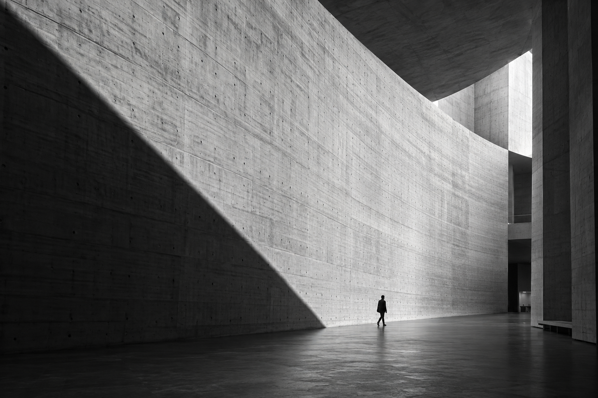

01NATIONAL INSTITUTION
↗국가기관 웹사이트 리뉴얼
프로젝트 정보
실제 프로젝트로 교체할 샘플입니다. 담당 업무, 기간, 기여도, 접근성 구현 사항을 입력하세요.
I transform design into functional,
accessible experiences.
DESIGN INTO STRUCTURE.
STRUCTURE INTO EXPERIENCE.
다양한 화면에서 일관된 경험
반응형 웹사이트 구축
웹 표준, 웹 접근성을 고려한 마크업
반응형 웹, 인터랙션 구현
사용자 경험을 고려한
유지보수 및 코드 개선

01실제 프로젝트로 교체할 샘플입니다. 담당 업무, 기간, 기여도, 접근성 구현 사항을 입력하세요.
실제 프로젝트로 교체할 샘플입니다. 정보 구조와 공통 UI, 반응형 구현 과정을 정리하세요.
실제 프로젝트로 교체할 샘플입니다. 브랜드의 시각적 표현과 모션 설계 내용을 입력하세요.
실제 프로젝트로 교체할 샘플입니다. 이벤트 콘텐츠와 인터랙션 구현 내용을 입력하세요.
실제 프로젝트로 교체할 샘플입니다. 모바일부터 데스크톱까지의 대응 전략을 정리하세요.
예술과 일상이 만나는 디지털 공간.
사용자 중심의 경험을 설계하는
웹사이트 리뉴얼 콘셉트입니다.
글로벌샤인 USA
좋은 웹은 보이지 않는 곳에서
사용자를 더 가깝게 만듭니다.